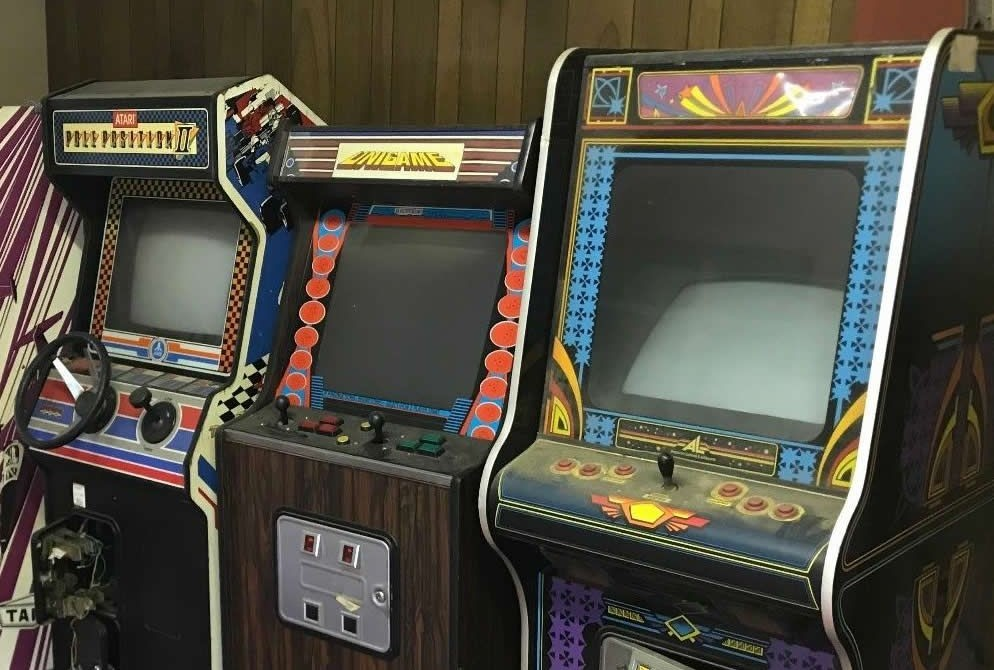
Videospēļu vēsture
Ienirstiet aizraujošajā virtuālo pasauļu attīstības ceļā no pirmajiem pikseļiem līdz mūsdienu reālistiskajām spēlēm.
Apskatīt izstādi
Par izstādi
Šīs virtuālās izstādes mērķis ir iepazīstināt apmeklētājus ar video spēļu aizraujošo evolūciju, parādot to ceļu no pirmajiem eksperimentālajiem projektiem un arkādes automātiem līdz mūsdienu fotoreālistiskajām spēlēm, virtuālajai realitātei un globālajai e-sporta kultūrai. Sākot ar vienkāršiem arkādes automātiem un beidzot ar masīvām tiešsaistes pasaulēm, šī izstāde piedāvā unikālu iespēju iepazīties ar nozīmīgākajiem pagrieziena punktiem spēļu vēsturē.
Video spēles ir kļuvušas par vienu no ietekmīgākajām mūsdienu izklaides un mākslas formām. Sākot ar vienkāršiem pikseļiem 20. gadsimta 70. gados un tādām leģendārām konsolēm kā Atari un NES, industrija ir piedzīvojusi milzīgu tehnoloģisko lēcienu. Šodien spēles apvieno sevī kinematogrāfisku stāstījumu, mākslīgo intelektu un augsta līmeņa interaktivitāti, kas vieno miljoniem spēlētāju visā pasaulē.
Galerija
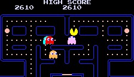
Arkādes spēles
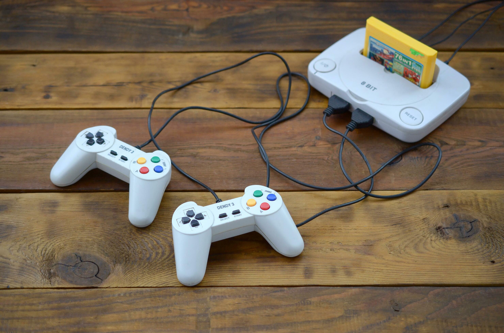
8 bitu konsole
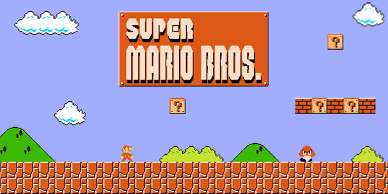
8 bitu spēle
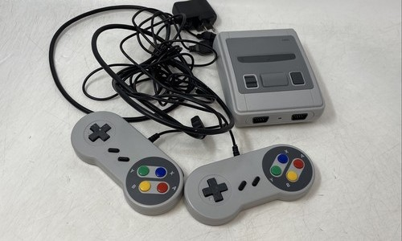
16 bitu konsole

16 bitu spēles
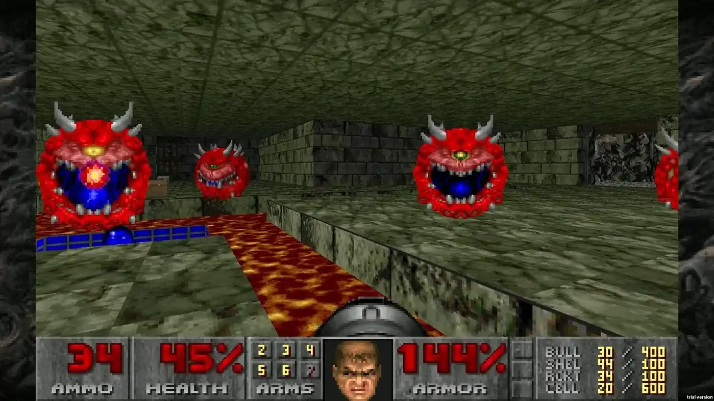
3D grafikas ienākšana
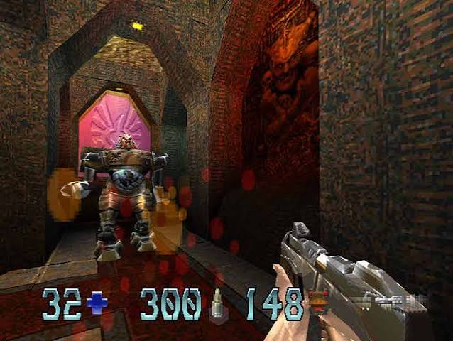
PS1 grafika
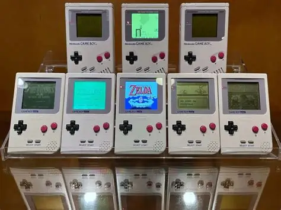
Mobilo konsole attīstība
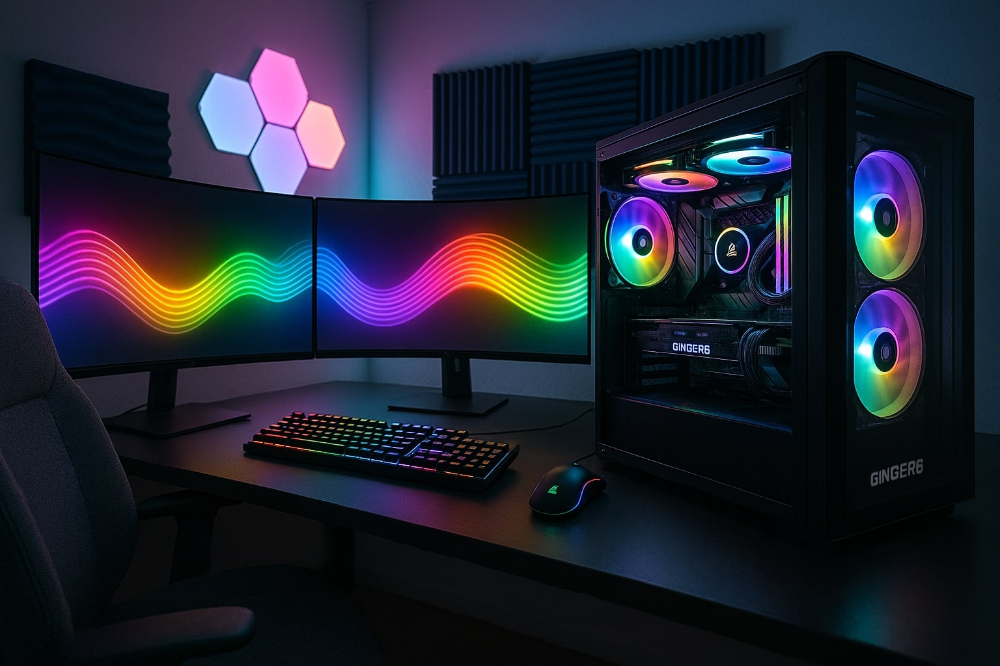
Mūsdienu Gaming

Virtuālā realitāte (VR)
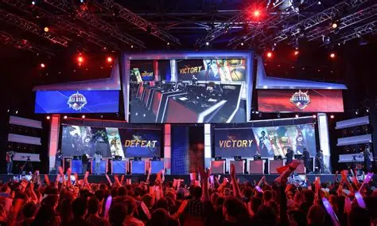
E-sports un sabiedrība
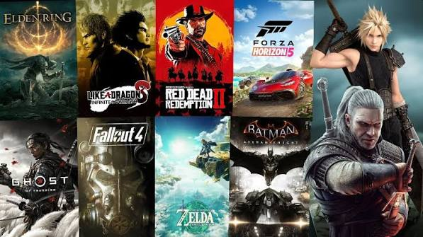
Mūsdienu spēles
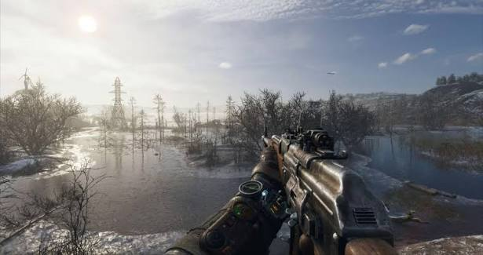
Mūsdienu spēļu grafika
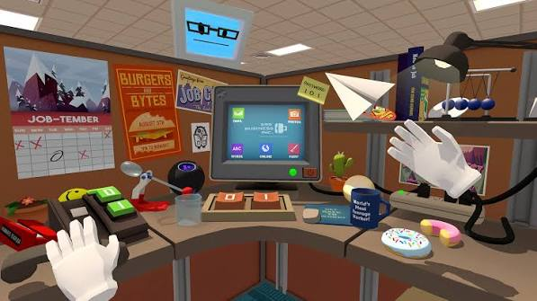